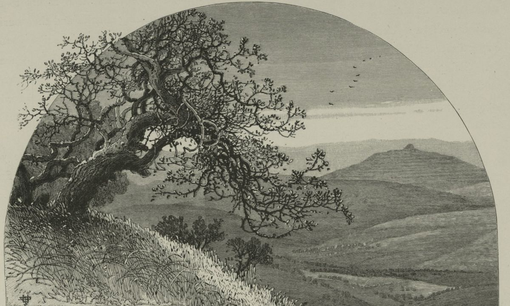

Judges 20 — The Mister Translation

Not a picture of the battle but of its ground. The view is taken from Nebi Samwil, one of the sites proposed for Mizpah, and the conical hill on the horizon is Tell el-Ful, the usual identification of Gibeah; the folded hill country between is the land of Benjamin, where the “highways” of verses 31–32 ran and the ambush lay.
Translator's Notes — verse by verse
As one man. The answer to the last words of Judges 19, “consider it, take counsel, and speak” (Judges 19:30, now on these pages), comes at once: “the congregation was assembled as one man”. The words “as one man” stand in nine verses of the Hebrew Bible, three of them in this chapter (vv. 1, 8 and 11); one is Jehovah’s promise to Gideon, “you will strike down Midian as one man” (Judges 6:16, now on these pages). The congregation is the edah, the word for Israel assembled in the wilderness. They come “from Dan to Beersheba”: the phrase stands in seven verses of the Hebrew Bible, and this is the first of them in the order of the books. The city of Dan got its name only two chapters back (Judges 18:29, now on these pages).
Mizpah and “the corners of all the people”. This Mizpah, “the watchtower”, is the town of Benjamin, usually placed a few miles north of Gibeah, not the Mizpah in Gilead where Israel camped against Ammon (Judges 10:17, now on these pages). The leaders who take their stand are pinnot, “corners”, the word Saul will use when he calls “all the corners of the people” (1 Samuel 14:38). The ASV has “the chiefs of all the people”, the NWT 1984 “the keymen of all the people”. The A Greek text has “the region of all the people”, and the B text has no “corners” at all, and has the tribes stand “before the face” of God, perhaps reading penei, “the face of”.
“The murdered woman.” The Levite is “the husband of the murdered woman”, ha-nirtsachah, from ratsach, the verb of “You shall not murder” (Exodus 20:12, 20:13 in English Bibles, now on these pages). The form stands in one verse of the Hebrew Bible. The KJV has “the woman that was slain”, the ASV “the woman that was murdered”, the NWT 1984 “the husband of the murdered woman”; the Douay has “the woman that was killed”.
His account. He tells it his own way. “Me they meant to kill”: at the door the men had asked for him “that we may know him” (Judges 19:22). “My concubine they violated, and she died”: he does not say that he seized her and brought her out to them himself (19:25), and where the chapter before kept silent about when she died, he does not. The A Greek text adds that they “mocked her”. “They have done depravity and an outrage in Israel”: zimmah, the word this translation renders “depravity” in Leviticus 18:17 (now on these pages), and nevalah, the “outrage in Israel” done to Dinah (Genesis 34:7, now on these pages). The two words stand together in one verse of the Hebrew Bible. The KJV has “lewdness and folly”, the NWT 1984 “loose conduct and disgraceful folly”, the NIV “this lewd and outrageous act”.
“Give your word and counsel here.” The three commands of 19:30 are taken up one by one: “Speak”, says the assembly (v. 3), and the Levite asks them to “give your word and counsel here”, davar ve-etsah, the noun of “take counsel”. The ASV has “give here your advice and counsel”, the NWT 1984 “give YOUR word and counsel here”.
“Against it, by lot.” The people swear no man will go home, and then name the plan in four Hebrew words with no verb: “against it, by lot”. Both Greek texts supply one, “we will go up against it by lot”, and so do the ASV, “we will go up against it by lot”, and the KJV, “we will go up by lot against it”. The NIV has “in the order decided by casting lots”. The lot is not used again in the chapter; at Bethel the order of battle is asked of God (v. 18).
Provisions. One man in ten is set aside “to take provisions for the people”, so that the rest can fight. The KJV has “to fetch victual for the people”, the NWT 1984 “to procure provisions for the people”; the TLB “a supply line to bring us food”.
“Geba of Benjamin.” In verse 10 the Hebrew spells the town Geva, Geba, not Gibeah. Geba is a separate town in Benjamin’s lot, listed beside Gibeon (Joshua 18:24 and 21:17, both now on these pages), and both names mean “hill”. Both Greek texts have the city of the chapter, Gabaa, and so do the ASV, “when they come to Gibeah of Benjamin”, and the NWT 1984, “by going against Gibʹe·ah of Benjamin”. This translation prints the name the Hebrew spells. The outrage is again nevalah, now laid on the city as a whole: “all the outrage that it has done in Israel”.
Banded together. The men gather “as one man, banded together”: chaverim, “companions”. The KJV and the ASV have “knit together as one man”, the NWT 1984 “as one man, as allies”.
Deuteronomy’s law. The tribes send to “all the tribes of Benjamin”: the Hebrew has the plural, as though Benjamin’s clans were tribes; the ASV has “through all the tribe of Benjamin”. “What is this evil that has happened among you?” repeats the verb of 19:30, “Nothing like this has happened”. Then they ask for “the sons of worthlessness”, the men of Deuteronomy 13:14 (now on these pages), “so that we may put them to death and burn out evil from Israel”. The command “you shall burn out the evil” stands in nine verses of the Hebrew Bible, all in Deuteronomy, two of them ending “from Israel” (Deuteronomy 17:12 and 22:22, both now on these pages). The KJV has “put away evil from Israel”, the NWT 1984 “let us clear out what is bad from Israel”, the NIV “purge the evil from Israel”.
“Would not listen.” Benjamin “would not listen to the voice of their brothers”: lo avu lishmoa, the words used of the men of Gibeah who “would not listen” to the old man at the door (Judges 19:25). The written Hebrew lacks the words “the sons of”, and the margin tells the reader to say them. The ASV follows the written text, “But Benjamin would not hearken”; the KJV reads the margin, “But the children of Benjamin would not hearken”, and so does the NWT 1984, “And the sons of Benjamin did not want to listen”.
Twenty-six thousand. Benjamin musters twenty-six thousand from its cities and seven hundred from Gibeah. The witnesses do not agree on the first number: the A Greek text has twenty-five thousand, the B text twenty-three thousand, and the Douay “five and twenty thousand men that drew the sword”. Josephus has twenty-five thousand six hundred (Antiquities 5.156, numbered 5.2.10 in Whiston). The A text’s figure with the seven hundred of Gibeah makes 25,700, which is exactly the 25,100 who fall (v. 35) and the six hundred who escape (v. 47); the Hebrew’s figure leaves a thousand men unaccounted for.
Left-handed. Seven hundred chosen men are itter yad-yemino, “restrained in the right hand”, the words used of Ehud, the Benjaminite deliverer (Judges 3:15, now on these pages). The phrase stands in two verses of the Hebrew Bible, there and here, and both are men of Benjamin, whose name means “son of the right hand” (Genesis 35:18, now on these pages). Both Greek texts call them “ambidextrous”, as they call Ehud, and the Douay has “fighting with the left hand as well as with the right”; the KJV has “lefthanded”.
“And not miss.” Each could “sling a stone at a hair and not miss”: the verb is chata, which elsewhere means “to sin”, and here keeps the sense of missing a mark. The words “and not miss” stand in two verses of the Hebrew Bible; the other is Ecclesiastes 7:20, where they mean “and does not sin”. Both Greek texts keep the double sense, with verbs of the same family as hamartia, “sin”. The NWT 1984 has “a slinger of stones to a hairbreadth and would not miss”.
Judges 1 again. At Bethel they ask, “Who will go up for us first to battle against the sons of Benjamin?”, the question that opened the book: “Who will go up for us against the Canaanite first?” (Judges 1:1, now on these pages). The words “will go up for us” stand in three verses of the Hebrew Bible: there, here, and “Who will go up for us to the heavens” (Deuteronomy 30:12, now on these pages). The answer is the same, “Judah”, but at the start of the book Jehovah added “Look — I have given the land into his hand” (Judges 1:2), and here he adds nothing. The NWT 1984 has “Judah in the lead”.
Bethel or “the house of God”. Bethel means “house of God”, and the older versions translate the name. The KJV has “went up to the house of God”, and the Geneva “went up to the house of God”; the Douay adds a gloss, “the house of God, that is, to Silo”. The ASV keeps the name, “went up to Beth-el”.
Two defeats. Benjamin “destroyed in Israel … twenty-two thousand men, to the ground” on the first day, and eighteen thousand on the second. The ASV has “destroyed down to the ground of the Israelites”, the NWT 1984 “down to ruin to the earth”. Josephus says night broke off the first battle and that after the second the Israelites left their camp in fear (Antiquities 5.157–158, numbered 5.2.10 in Whiston). His Greek has twenty-two thousand for the first day, as the Hebrew does; Whiston’s English has “two thousand”.
“Benjamin my brother.” Between the battles Israel weeps “before Jehovah until evening” and asks, in the singular, “Shall I again draw near to battle against the sons of Benjamin my brother?” Early in the book the people wept before Jehovah too, at Bochim, “the weepers” (Judges 2:4–5, now on these pages), and at Judges 2:1 both Greek texts put Bochim at Bethel. Verse 22, “took courage, and drew up for battle again”, is told before the weeping of verse 23 that led to it. The KJV opens verse 23 with a parenthesis, “(And the children of Israel went up and wept”, and the Geneva does the same, “(For the children of Israel had gone up and wept”. A paraphrase puts the courage after the weeping: the TLB has “So the men of Israel took courage”.
A third asking. After the second defeat “all the people” go up to Bethel, weep, sit “before Jehovah”, fast until evening, and offer “burnt offerings and peace offerings”, as Joshua did on Mount Ebal (Joshua 8:31, now on these pages). The NWT 1984 has “burnt offerings and communion offerings”, the NIV “burnt offerings and fellowship offerings”, the Douay “holocausts, and victims of peace offerings”.
The ark at Bethel. The narrator stops to explain: “the ark of the covenant of God was there in those days”. Elsewhere in this period the house of God is at Shiloh (Joshua 18:1; Judges 18:31, both now on these pages). The full title “the ark of the covenant of God” stands in four verses of the Hebrew Bible. Josephus moves the whole assembly to Shiloh, “before the tabernacle” (Antiquities 5.150, numbered 5.2.9 in Whiston), and has them fast at Bethel and ask through “Phinehas the high priest” (5.159). The ASV has “for the ark of the covenant of God was there in those days”; the NWT 1984 “as it was there that the ark of the covenant of the [true] God was in those days”.
Phinehas. Standing before the ark is “Phinehas son of Eleazar son of Aaron”, the priest who turned back Jehovah’s wrath in Numbers 25:7 and 25:11, and who was sent to the tribes beyond the Jordan in Joshua 22:13; his father Eleazar was buried “at the hill of his son Phinehas” (Joshua 24:33), all now on these pages. If Aaron’s grandson is still serving, these events fall within a generation or two of Joshua, though the book tells them last. The question now has a third part, “or shall I cease?”, and for the first time the answer carries a promise: “Go up, for tomorrow I will give him into your hand”. The ASV has “to-morrow I will deliver him into thy hand”, the NWT 1984 “tomorrow I shall give him into your hand”.
Ai again. “Israel set an ambush against Gibeah”, the tactic Jehovah gave Joshua at Ai: “Set an ambush for the city, behind it” (Joshua 8:2, now on these pages). The story follows Ai step by step. The sons of Benjamin “were drawn away from the city”, the verb used of the men of Ai (Joshua 8:16). They say, “They are struck down before us, as at first”, as Joshua said Ai would say, “They are fleeing before us, as at first” (Joshua 8:6). And “they did not know that the evil was touching them”, as the king of Ai “did not know that there was an ambush against him” (Joshua 8:14). The ASV has “they knew not that evil was close upon them”, the NWT 1984 “did not know that calamity was impending over them”.
The highways. The first deaths are “on the highways — one goes up to Bethel and the other to Gibeah — in the field”, about thirty men. A road “to Gibeah” is hard to picture when Gibeah is the city the fighting has left behind; both Greek texts keep the name. The ASV has “of which one goeth up to Beth-el, and the other to Gibeah, in the field”.
Baal-tamar and Maareh-geba. The main army turns at Baal-tamar, “lord of the palm”, a name that stands in one verse of the Hebrew Bible; the place is not known. The ambush bursts out “from Maareh-geba”, a word whose meaning is uncertain. The ASV keeps it as a name, “even out of Maareh-geba”; the KJV has “even out of the meadows of Gibeah”, and the Geneva “even out of the meadows of Geba”. The A Greek text has “from the west of Gabaa”, as though reading ma’arav, “west”, and the NIV agrees, “on the west of Gibeah”; the B text spells the name out, Maaragabe.
The verb turns. Benjamin says of Israel, “They are struck down before us” (niggafim, v. 32); then “Jehovah struck Benjamin before Israel” (vayyiggof, v. 35), the same verb with the subject changed. Twenty-five thousand one hundred fall. The NWT 1984 has “Jehovah proceeded to defeat Benjamin before Israel”.
A second telling. With verse 36 the story goes back and tells the ambush again, from Benjamin’s side: the thirty dead of verse 31 and the “as at first” of verse 32 return in verse 39, “as in the first battle”. The first words can be read two ways. The ASV has “So the children of Benjamin saw that they were smitten”; the NWT 1984 reads the opposite, “the sons of Benjamin imagined that the men of Israel faced defeat”; the Douay has “when they saw themselves to be too weak, began to flee”.
The signal. The sign agreed with the ambush is a mas’et of smoke, a “lifting”, the word Jeremiah uses for a signal raised over a town (Jeremiah 6:1). Verse 38 has one more word, hereb, which looks like a form of “make much”, and the versions take it as “great”: the ASV has “a great cloud of smoke”, the KJV “a great flame with smoke”. The A Greek text has “a beacon of smoke”; the B text reads the word as “of the battle”.
The whole city. “The signal began to go up from the city, a pillar of smoke”, and when Benjamin looked back, “the whole city was going up to the sky”. The words “pillar of smoke” stand in one verse of the Hebrew Bible. “The whole city” is kelil ha-ir: kalil is the word for an offering burned entire (Leviticus 6:15–16), and the word of Deuteronomy’s law for an Israelite city that has served other gods: “you shall burn with fire the city and all its spoil, entirely, to Jehovah your God” (Deuteronomy 13:17), both now on these pages. The going up “to the sky” is Ai’s again: “the smoke of the city was going up to the sky” (Joshua 8:20). The ASV has “the whole of the city went up in smoke to heaven”, the NWT 1984 “the whole city went up heavenward”.
“The evil had touched them.” The men of Benjamin “were terrified, for they saw that the evil had touched them”, the verb of verse 34, where the evil “was touching them”. The ASV has “were dismayed”, the KJV “were amazed”, the NWT 1984 “were disturbed”.
“The battle clung to them.” Benjamin turns “toward the way of the wilderness”, as Joshua’s men pretended to at Ai (Joshua 8:15), “but the battle clung to them”: hidbiqathu, from davaq, the verb of a man who “clings to his wife” (Genesis 2:24, now on these pages), and again in verse 45, “pressed hard after them”. The KJV has “the battle overtook them”, the ASV “the battle followed hard after them”.
“Where he rested.” They “trod him down where he rested”: the Hebrew is the single word menuchah, “rest” or “resting place”. The ASV has “trod them down at their resting-place”, the KJV “trode them down with ease”, the NWT 1984 “They pursued him without a place to rest”. The B Greek text reads a place name, “from Noua”, and the A text “to give him rest”.
Gleaned. On the highways “they gleaned of them five thousand men”: vay’olleluhu, the verb of going back over a vineyard after the harvest (olel). It has the letters of “they abused her” in Judges 19:25, vayit’allelu. Both Greek texts use a verb for gleaning stalks. The ASV has “they gleaned of them in the highways five thousand men”, the NWT 1984 “they made a gleaning of five thousand men”; the NIV “cut down five thousand men”. Gidom, where two thousand more fall, is a name that stands in one verse of the Hebrew Bible.
Six hundred at the rock of Rimmon. Eighteen thousand, five thousand and two thousand make the twenty-five thousand of verse 46, the round number for the twenty-five thousand one hundred of verse 35. Six hundred escape to the rock of Rimmon and stay there “four months”, the time the concubine spent in her father’s house (Judges 19:2, now on these pages); the words “four months” stand in three verses of the Hebrew Bible. Six hundred was also the number of the Danite war party (Judges 18:11, now on these pages). Josephus calls the place “a rock called Rhoa” (Antiquities 5.166, numbered 5.2.12 in Whiston, whose English prints “Rimmon”).
Sent up in fire. The men of Israel strike Benjamin “from the whole city to the beasts”: the Hebrew metom means “entirety”, though the same letters can be read metim, “men”. The ASV has “both the entire city, and the cattle”; the KJV reads “men”, “as well the men of every city, as the beast”; the B Greek text spells the word as a place, “from the city Methla”. The TLB goes past the Hebrew with “men, women, children, and cattle”. Then “all the cities that were found they sent up in fire”, the words used of Judah at Jerusalem (Judges 1:8, now on these pages). Josephus says they burned Gibeah, killed the women and the males under age, and did the same in the other cities of Benjamin (Antiquities 5.164, numbered 5.2.11 in Whiston).
Patterns worth carrying forward
Where this translation keeps the words exact and distinct: “as one man” for ke-ish echad; “the congregation” for edah; “the corners of all the people” for pinnot; “the murdered woman” for ha-nirtsachah; “depravity” for zimmah, as in Leviticus, and “outrage” for nevalah; “sons of worthlessness” for benei beliyya’al; “burn out evil from Israel”, as in Deuteronomy; “left-handed” for itter yad-yemino, as with Ehud; “and not miss” for ve-lo yachati; “Geba of Benjamin” where the Hebrew spells Geba; “ambush” and “as at first”, as at Ai; “the whole city” for kelil ha-ir; “gleaned” for olel; and “sent up in fire” for shilchu ba-esh, as in Judges 1:8.
Echoes paid. “Consider it, take counsel, and speak” at Judges 19:30 is answered at 20:3 and 20:7, and “sons of worthlessness” and “an outrage in Israel” return at 20:6 and 20:13. The opening question of Judges 1:1 is asked again at Bethel, Ehud’s left hand of Judges 3:15 returns in seven hundred slingers, the ambush and the smoke of Ai at Joshua 8 are fought again at Gibeah, and Deuteronomy’s city burned “entirely” (Deuteronomy 13:17) is a city of Israel. The concubine’s “four months” of Judges 19:2 and the Danites’ six hundred of Judges 18:11 both come back at the rock of Rimmon.
Echoes planted. The six hundred at the rock of Rimmon are sent for in Judges 21:13, and Israel weeps at Bethel again in 21:2, both now on these pages. Saul calls “all the corners of the people” at 1 Samuel 14:38, “from Dan to Beersheba” returns at 1 Samuel 3:20, and Hosea remembers “the days of Gibeah” at 9:9 and 10:9; none of these last is translated here yet.
Next installment in this book: Judges 21 — Israel has sworn at Mizpah that no man will give his daughter to Benjamin, and now weeps at Bethel that a tribe is missing; Jabesh-gilead, which did not come, is struck and four hundred virgins are taken, and the last two hundred wives are seized from the dancers at Shiloh. “In those days there was no king in Israel.”